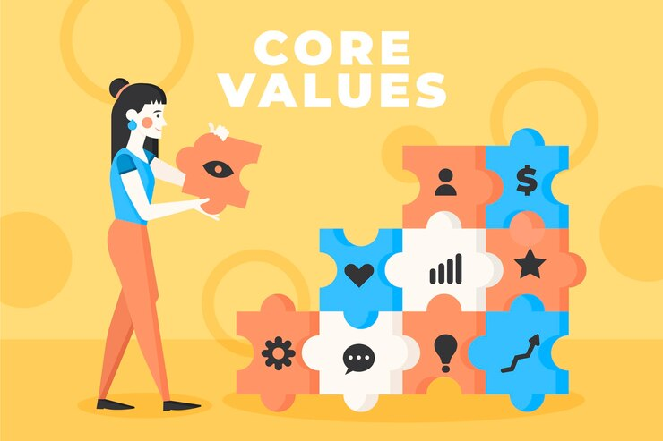

Principios
El ser humano es un ser capaz de autodominio y trascendencia, no solo posee el valor de su persona, sino que también le da el valor a todo aquello que se relaciona con él, forjando así sus propios principios, que son las pautas de desarrollo contenidas en las ideas del hombre.
Los principios son un conjunto de valores, normas y creencias que suelen manifestarse por medio de nuestra cultura, nuestra forma de ser, de pensar y de conducirnos. Los principios también son usados para referirse a fundamentos y o leyes sobre cómo funciona una ideología, teoría, doctrina, religión o ciencia.
Cada uno de nosotros, de acuerdo a nuestra educación y experiencias, adoptaremos nuestros propios principios que entrarán en juego cada vez que nuestra conciencia lo demande. Pero también, acompañando a estos, están los principios éticos que son los que compartimos con el resto de la sociedad.
Por ello es que tienen un alcance universal, para comprenderlo mejor. Hablemos de que los principios existen en la conciencia de los seres humanos, pero de cada uno depende si los valora o no. Por ejemplo, tomemos el caso de la puntualidad.
Todos sabemos que el término puntualidad es para precisar una hora en la cual se reunirá un grupo de personas, pero depende de cada una de ellas cumplir con el horario pactado, como una muestra de respeto hacia el tiempo de los demás.
Finalmente, es importante destacar que los principios, que las personas adultas asumimos en nuestra vida y que funcionan de alguna manera como guía del actuar, están en estrecha vinculación con la formación, el entorno y la subjetividad.
Los principios no son más que la exteriorización de aquellas cosas que el ser humano necesita para desarrollarse conforme y ser feliz, así como formar parte de mejorar las relaciones con la sociedad.
Así como existen principios que se involucran en nuestra vida diaria, también existen principios en otras áreas, como en el ámbito laboral.
Valores
Podríamos definir los valores humanos como conjunto de virtudes de una persona en cuanto a su actuación, interacción y relación con su entorno. Es decir, se trata de los valores éticos, morales, políticos, económicos y sociales que posee una persona y que le dictan qué es lo correcto y qué no lo es.
Mahatma Gandhi dijo: “Mantén positivos tus valores porque tus valores se convierten en tu destino”. Y es que, efectivamente, si las personas cultivamos y educamos en valores tendremos un futuro más solidario, bondadoso, honesto, sensible, humilde y respetuoso. Para ello es importante conocer la lista de valores humanos que pueden hacer que ese destino del que hablaba Gandhi sea positivo para toda la humanidad.
Valores humanos
- Respeto
Cualquier valor podría encabezar esta lista, pero creemos que el respeto merece ocupar este puesto. Respetar a nuestra familia, a nuestros amigos y amigas, a quienes no conocemos, a culturas que nos parecen distintas, a quienes son diferentes... genera un ambiente de comunicación y de paz.
- Empatía
Existe un principio en muchas culturas y religiones que dice: “Trata a los demás como te gustaría que te trataran a ti”. Esta es la ejemplificación más clara de la empatía: la cualidad de ser capaz de ponernos en la piel de otro ser humano y comprender las razones de quienes nos rodean.
- Responsabilidad
Puede parecer que la responsabilidad no es un valor demasiado importante. Si crees esto, realiza el siguiente ejercicio: imagina un mundo en el que nadie se hace responsable de sus actos ni de sus palabras. La responsabilidad está muy vinculada, como ves, al compromiso y a la honestidad.
- Solidaridad
La solidaridad y la generosidad van de la mano. En realidad, no se entiende una sin la otra. Consiste en capaz de realizar esfuerzos de manera altruista para ayudar a quienes más lo necesitan, luchando por la dignidad de todas las personas.
- Voluntad
Últimamente parece que la voluntad es un valor ausente, sobre todo en las instituciones. Se usa mucho el término “voluntad política”, principalmente cuando gobiernos de todo el mundo ponen excusas ante asuntos tan graves como la muerte de cientos de personas en el mar o el éxodo de miles de familias huyendo de una realidad violenta. Querer es poder, y con unas prioridades claras cambiar las cosas es posible.
- Honestidad
La honestidad es una cualidad que implica sinceridad. Encontrar un futuro con personas honestas garantiza verdad, respeto, franqueza y libertad.
- Compasión
Muy relacionada con la empatía, la compasión permite que un ser humano sea capaz de sentir el sufrimiento de la otra persona y tomar las acciones necesarias para ayudar.
- Amor
Cuando hablamos de amor no nos referimos solo al amor de pareja. Actuar con amor ante cualquier circunstancia, con cualquier persona o con lo que nos rodea significa actuar de manera bondadosa. ¿Imaginas un mundo en el que todos y todas nos moviéramos solo por y con amor?
- Perdón
Aprender a perdonar es una de las cosas más complicadas que existen. Muchas sociedades están basadas en sistemas que tienen la venganza como telón de fondo y sus gobiernos la usan a discreción sin tener en cuenta las terribles consecuencias de una sociedad sin perdón.
- Gratitud
Por último, pero no por ello menos importante, encontramos el último valor humano de nuestra lista: la gratitud. La base de la amistad, del amor, de la familia… es la gratitud. Y es que ser capaz de dar las gracias por lo que otros hacen por ti es beneficioso para ti y para quien te ha echado una mano.
